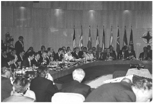
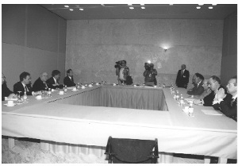

a) Müzakere Hazırlığı
Dışişleri Bakanı olmamdan dokuz gün sonra, Madrid’e, ilk dış temasıma gidecektim. nato’nun ‘Zirve’ toplantısında (9 Temmuz 1997) Cumhurbaşkanı Demirel’e refakat etmekteydim. Madrid, olağan bir destek görevinden ibaret kalsa, benim açımdan yararlı bir deneyim anlamı taşıyacaktı. Ne var ki, durum farklıydı, ilk ve çok önemli bir müzakereyi, kısacık bir hazırlık süresinin ardından gerçekleştirmek durumundaydım:
Türkiye ile Yunanistan arasındaki bitmez tükenmez gerilim, malûm, abd’nin ve nato’nun başlıca bir kaygısıydı. İki nato ‘müttefiki’, Ege’de her an bir çatışmaya sürüklenebilecek alışkanlıklar, uygulamalar içindeydi. Sınır ihlali iddiaları, sürekli olarak ve karşılıklı yükseltiliyordu. Savaş uçaklarının ‘it dalaşı’ haberleri, savaş gemilerinin tehlikeli manevraları, yıllardır birbirini izlemekteydi. ‘Kardak Bunalımı’ (1996) zorlukla önlenebilmiş, savaşın eşiğinden dönülmüştü; olay, zihinlerde tazeydi. Yunan tarafının, karasularının sınırını kendi başına ‘12 Mile’ uzatmasını, Türkiye, bir ‘causus belli’, ‘savaş nedeni’ olarak nitelemekteydi. Ege’nin iki yakasında ve abd/nato/ab çevrelerinde herkes tedirgindi, kaygılıydı.

nato Madrid Zirvesi (1997). Katılımcılar arasında İspanya Başbakanı Gonzales, İspanya Devlet Başkanı Aznar, Dışişleri Bakanı İsmail Cem, 9. Cumhurbaşkanı Süleyman Demirel, İngiltere Başbakanı Tony Blair, abd Dışişleri Bakanı Madeleine Albright ve abd Başkanı Bill Clinton da var.
abd diplomasisi, yeni fikirler, orijinal yaklaşımlar üretmekte hayli mahirdir. 1997 yaz aylarında, bu özellikteki bir öneri geliştirilmiş, Türk ve Yunan taraflarına ulaştırılmıştı. Öneriye göre, Ege’de çatışma ihtimalini giderecek bir uzlaşma metni Türk ve Yunan taraflarınca oluşturulacak, abd’nin katkısıyla Madrid’de müzakere edilerek mümkünse imzalanacaktı. Bakanlığımın ilk gününde, kendimi bu zorlu tartışmanın içinde buldum. Aslında, henüz göreve gelmiş olmam nedeniyle bu müzakereyi erteleyebilirdim ama istemedim: Türk-Yunan gerilimini yumuşatmak, gerçekleştirmeyi öngördüğüm programın hedefleri arasındaydı. ‘Ege sorunları’ dendiğinde, hukuktan, tarihe, siyasetten, savunmaya kadar bir dizi sual işareti önünüze çıkıverir: Lozan Anlaşması’nın (1923) karasularına ilişkin hükümlerinin yorumu; Paris Antlaşması’nın (1947) ne anlama geldiği; uluslararası hukuk ve bm konvansiyonları; adacıkların ve kayalıkların aidiyeti; bunlar üzerindeki devlet uygulamalarının (bayrak dikmek, inşaat yapmak gibi) hukuki değeri; anlaşmalar gereği silahtan arındırılmış adaların Yunanistan tarafından anlaşmalar hilafına silahlandırılmış olması; Uluslararası Adalet Divanı’nın konumu; siyasi kararların yol açabileceği savunma sorunları; vb... vb... Son derece karmaşık ve çok yönlü bir sorundur, Ege. En küçük bir yanlışı kaldırmaz, fevkâlade dikkatli ve ihtiyatlı olmanın zorunluğu vardır.
İlgili bakanlık biriminin yöneticileriyle, müsteşarla, yardımcısıyla, uluslararası hukuk uzmanlarıyla, peş peşe toplantılar yaptık. Konuyu ayrıntılarıyla inceledik, siyasi boyutunu değerlendirdik. Yunanistan’la bir metin üzerinde olsun ‘uzlaşma’ arayışına girmek, hem Ege’nin güvenliği açısından hem de Türkiye’nin imajına katkısı bakımından önemliydi. Bu özelliklerinin yanı sıra, konunun güvenlik boyutunu değerlendirdik. Siyaseten doğru olan bir adım, bizi savunma alanında zora sokabilirdi. Bu düşünceyle, Genelkurmay Başkanlığı’yla temas ettim; konunun askeri uzmanlarıyla toplanmak istediğimi söyledim. Bir amiral, bir denizci albay ve üç uzmandan oluşan ekip bakanlığa geldi. Kendileriyle, beş gün sürecek tartışma maratonunu başlattık. Konularına fevkâlade hâkimdiler. Ben, Ege’de bir adım atarken, en küçük bir hususun gözden kaçırılmamasını istiyordum. Sürekli sual sorduğumu, “şeytanın avukatlığını” yaptığımı hatırlıyorum. Sonuçta, hem bir uzlaşmaya zemin olabilecek hem de ileriye dönük bir sakınca yaratmayacak bir ‘tutum kâğıdı’ oluşturarak bunu abd tarafına ilettik.
Madrid Zirvesi’ne ilişkin çalışma, benim dış siyaseti oluştururken ısrarla izleyeceğim yöntemin ilk örneği sayılabilir: Değişik boyutlar taşıyan her önemli konuda, her boyutun ilgilileriyle mutlaka danışarak, bakanlıklarıyla ve kurumlarıyla mutlaka eşgüdüm sağlayarak karar oluşturdum. Böyle bir yöntemi, bazılarının sandığı gibi bir ‘küçüklük’ gibi görmedim. Bilakis, sonuçta benim belirlediğim bir siyasete sağlanabilecek bütün katkıları almış olmanın güvencesini bu yaklaşımda buldum. Dış siyasetin güvenlik özelliği de taşıyan konularında, Genelkurmay’la ve Savunma Bakanlığı’yla; ekonomi ağırlıklı sorunlarda Dış Ticaret’le, kendilerini ilgilendiren alanlarda Adalet Bakanlığı’yla, İçişleri Bakanlığı’yla hep diyalog içinde oldum. Bu yaklaşımdan, dış siyaset ve tabii Türkiye adına yarar gördüm. Gerçekten, Türkiye’yi yönetenler, ya da yönetenleri eleştirenler veya onlara akıl vermeye çalışanlar, danışmanın ve eşgüdüm arayışının bir zaaf işareti değil, aslında, sorumluluğun ifadesi olduğunu anlayabilmelidir. Günümüzün karmaşık dünyasında, kimsenin başkasına vereceği fazladan bir aklı yok ama, hepimizin birbirimizden öğreneceği çok şey var.
b) Anılardaki İspanya
1997 Temmuzu’nun Madrid’deki nato Zirvesi, benim Dışişleri Bakanı olarak ilk dış temasımdı. Doğrusu, herhangi bir yabancılık çekmedim, yeni işimi yadırgamadım. Zaten Strasbourg’daki Avrupa Konseyi’nin Parlamenterler Meclisi’nden on yıllık tecrübem vardı. Simge olarak Madrid, bende, Valasquez’i, Lorca’yı, İspanyol içsavaşını, Picasso’yu, onun Guernica’sını, Franko sonrasında Suarez’in ve Gonzales’in, İspanya’yı karanlıktan, aydınlığa çıkarmasını çağrıştırır. Madrid’e ilk olarak 1965’te gitmiştim, eşimle beraber, bir taksiyle şehri dolaşmıştık. O dönemde Franko diktası egemendi. Şoförle, biraz İngilizce ve biraz da işaret diliyle, diktatörlükten ve demokrasiden konuşmuştuk... Dünya güzeli bir şehirdi, ancak, faşizmin insanı küçülten ağırlığını bir turist olarak bile hissetmiştim.
İspanya’ya ikinci gidişim, bambaşka bir ortamda gerçekleşmişti. Yıl 1983: Franko’nun ölümünü izleyen çalkantılı dönem, demokrasiye dönük bir açılımla noktalanmıştı. Önce, İspanyol yenileşmesinin bence en önemli aktörü olan Suarez’in hükümeti oluşmuştu. Eskimiş kabuğun çatladığı, egemenliğini kaybetmekte olanların direndiği zorlu günlerde, İspanya, bir bakıma çok talihliydi, çünkü, o dönem Avrupa’sının belki en akılcı siyasal liderleri, tarihle sözleşmişçesine, aynı zaman diliminde İspanya’dan çıkmıştı: Özgürlükçü, demokrat sağı Suarez temsil etmekteydi. Onun rakibi, aynı şekilde akılcı, dengeli olan sosyalist Gonzales’ti. O dönemde çok etkili olan Komünist Partisi’nin başında ise, özgürlükçü ‘Avrupa Komünizmi’ anlayışının öncülerinden, Carillo vardı. Her üçü de, demokrasi ortak paydasında birleşmişlerdi. Kral Juan Carlos’un da bütün ağırlığını demokrasiden ve üç siyasal liderden yana koymasıyla, İspanya düzlüğe çıkabilmişti. 1983’te, İspanya, yeni hayat tarzının önemli bir yol kavşağındaydı, genel seçim, bu acılı milletin geleceğine yol döşeyecekti.
İspanyol Sosyalist İşçi Partisi lideri ve seçim sonrasının başbakanı Felipe Gonzales, 1983 seçim kampanyasında kendisine eşlik etmek üzere bütün Avrupa’dan özgürlükçü, demokrat, sol düşünürleri, yazarları davet etmişti. Çağrılılar, kampanyanın bir haftalık bir kesitinde Gonzales’le beraber olacaktı. Türkiye’den ben davet edilmiştim. Yeni bir İspanya oluşum heyecanını yaşarken, ikinci kez Madrid’e gittim. Program gereği, Sosyalist İşçi Partisi’nin Genel Merkezi’ne vardım.
Hâlâ hatırlarım, beni ilk etkileyen, bir parti genel merkezindeki sessizlik ve tenhalık olmuştu. Bir de, kapıdan girerken, ne için geldiğimizin, kiminle görüşeceğimizin sorulması. Benim o güne kadar bildiğim ve gördüğüm bütün parti merkezlerinde, yani bizimkilerde, böyle bir şey olamazdı. O yıllarda, 1970’lerde, her isteyen, elini kolunu sallayarak bizim genel merkezlere girebilirdi. Sonra, genel merkezler ve il, ilçe merkezleri, sürekli koşuşturan, bağıra çağıra konuşan, birilerini bekleyen kalabalıklarla dolu olurdu. İstisnasız herkes sigara içer, yüksek sesle iktidara, alçak sesle parti yöneticilerine çatardı. İspanya’da ise, bir partide değil, sanki seçkin bir bilimsel araştırma merkezindeydim. ‘... Bizim bazı arkadaşlarımız görse, bu ne biçim sol parti diye küçümserdi’ diye düşündüğümü hatırlıyorum...
Gonzales’in seçim kampanyasında benim davetli olduğum bir haftalık bölüm, Bask bölgesini kapsamaktaydı. İspanya’nın bu sorunlu coğrafyasını bir hafta boyunca Gonzales’le ve Avrupa’nın başka ülkelerinden gelmiş yazarlarla birlikte dolaşmak ilginç bir tecrübe olacaktı. Yedi günlük gezi, beklentilerimi fazlasıyla karşıladı.
Seçim kafilemiz iki otobüsten oluşmaktaydı. İlkinde, Gonzales, eşi, parti yöneticileri yer alıyordu; ikincisinde, yazarlar. O geziden hafızamda çok net kalmış bazı gözlemler var. Bir defa, Gonzales ve öğretmen olan hanımını çok nazik, ayrıca çok akıllı bir çift olarak hatırlamaktayım. Gece konakladığımız otellerde sosyalizmin –sosyal demokrasinin– ve İspanya’nın geleceği üzerine, Gonzales’ler ve öteki yazarlarla, parti yöneticileriyle birlikte ateşli tartışmalarımız olmuştu. Bask bölgesinin Bilbao, St. Sebastian gibi büyük kentlerinde, kasabalarında mola verip, mitingler yapmaktaydık. Bir bakıma, heyecanlı bir yolculuktu: Bölge tekin değildi, Bask ayrılıkçılarının otobüslere saldırmasından çekinilmekteydi. Karanlıkta yol alırken otobüsün içinde ışık yakılmadığını hatırlıyorum. Teröristlere ya da Franko kalıntısı faşistlere kolay bir hedef olmamak için... Gene hatırladığım, Bask çoğunluğun yaşadığı bu kent ve kasabaların, son derece gelişmiş, varlıklı görüntüsüydü. Oysa ben, İspanya’nın bu dertli yöresinde ülke genelinin çok altında bir yaşam düzeyiyle, yoksul insanlar ve dökülen binalarla karşılaşmayı bekliyordum. Tam aksine, Bask kentlerinde Fransa’yı çağrıştıran düzenli, bakımlı bir ortam vardı.
1983 yılında ilginç ve renkli bir propaganda yöntemi İspanya’da geçerlikteydi: Seçim ‘mitingleri’ geceleri yapılmaktaydı ve şehrin, kasabanın ‘arenasında’, yani, boğa güreşi stadyumunda gerçekleşmekteydi. Hafta boyunca her gece bir başka kent yahut kasabada bu mitingleri izledim. Çevresine göre, arenaların boyu değişiyordu. Önce, o yöreden sanatçılar müzik yapıyor, şiirler okunuyordu. Birkaç kez dansçılar da katılmıştı. Flamengo şarkıcıları hiç eksik olmuyordu. Sonra, Sosyalist İşçi Partisi’nin yöre sorumlusu, partinin önde gelen birkaç sözcüsü konuşuyor, nihayet, Gonzales halka hitap ediyordu. Tam da İspanya’ya yakışan bir miting ve propaganda anlayışı, diye düşünmüştüm.
1983 İspanyası alabildiğine coşkulu ve umutluydu. Yarışan üç lidere de (Suarez, Gonzales, Carillo) İspanyol halkı güveniyordu. Seçimi demokrasi kazanacaktı. Nitekim öyle oldu, Gonzales liderliğindeki İspanya, kısa sürede büyük bir toplumsal ve ekonomik atılımı başardı.
c) Demirel’le Birlikte Siyaset
nato’nun Madrid Zirvesi’nde, Türkiye’yi Cumhurbaşkanı Demirel temsil etmekteydi, ben ve Dışişleri’nden yetkililer kendisine ‘eşlik’ ediyorduk. Ben ilk kez Demirel’le birlikte çalışıyordum. 1960’lardan beri, her Türk vatandaşı gibi, ben de ‘Demirel’le birlikte yaşamış ve yaşlanmıştım’. Üstelik, çok büyük bölümünde kendisine karşı olarak... Yazarlığımda, siyasetçiliğimde, benim yer aldığım düşünce dünyası, Sayın Demirel’in temsil ettiği partilerle hep mücadele etmiştir. Sadece 12 Mart 1971 müdahalesini izleyen ilk aylarda, her ikimiz de demokrasi tercihini paylaştığımızdan aynı doğrultuda geçici olarak birleşmiştik.
Demirel’le büyük boyutlarda karşı karşıya gelişimiz ise, trt genel müdürlüğüm nedeniyle, 1975 yılında gerçekleşmişti. Benim trt genel müdürlüğüm, 15 Şubat 1974’te, Ecevit-Erbakan koalisyon hükümetinin atamasıyla başlamıştı. Aradan çok zaman geçtiği için söyleyebiliyorum, gerçekten çok başarılı bir dönem olmuştu; trt hem programlarıyla hem teknolojisiyle büyük atılımlar yapmış, toplumdan yaygın beğeni almış, güçlü destek bulmuştu. O yıllarda sadece tek kanaldan, devletin televizyonundan ve devletin radyolarından yayın yapılıyordu. Dolayısıyla, trt’nin müthiş bir etkinliği vardı. Özellikle televizyonu hızla geliştirmiş, çağdaş bir yayıncılığı, gerçekten ‘objektif’ bir anlayışı getirebilmiştim. ‘Objektif’, yani, karşıt düşüncelerin, farklı söylemlerin, işvereni, işçisi, kentlisi ve köylüsüyle değişik toplum kesitlerinin yer alabildiği bir yayıncılık... 1970’lerin Türkiye’sinde, üstelik devletin radyo ve televizyonunda, hem de herkesin izleyebildiği, bir bakıma izlemeye mecbur olduğu tek yayın organında demokratik bir anlayışın egemen olabilmesi, bazılarınca neredeyse bir ihtilâl gibi algılanmaktaydı.
Ecevit hükümeti uzun ömürlü olamadı; 1974 Temmuzu’ndaki Kıbrıs Harekâtı’ndan kısa süre sonra istifa etti. Yerine, bir tür geçici yönetim niteliğiyle, Sadi Irmak hükümeti kuruldu. Ardından, Demirel, Erbakan, Türkeş’in ‘Milliyetçi Cephe Hükümeti’ geldi. trt’deki demokratikleşmeden rahatsız bütün tutucular, bu üçlünün çevresinde toplanmıştı. Yeni hükümetin başlıca hedefi, trt’yi eski haline döndürmekti. Nitekim, ilk kararları, trt Genel Müdürü’nü görevden almak oldu. Bunu, 1975 Mayısı’nda gerçekleştirdiler. Ne var ki, alınma kararına karşı Danıştay’da açtığım davayı kazandım. Hukuken, Başbakan Demirel, beni göreve iade etmek zorundaydı. Çünkü, Danıştay kararı uyarınca, gene hukuken, trt Genel Müdürü’nün makamı boşalmamıştı; benim görevim devam etmekteydi. O dönem Türkiye’sinde büyük bir siyasal olaya dönüşen bu durum, Demirel’le beni sürekli karşı karşıya getirdi. O, kendince birini trt’ye atıyordu. Ben, ‘hukuken dolu olan bir makama, atama yapılamayacağı’ gerekçesiyle Danıştay’da dava açıyordum ve ilk karara dayalı olarak her seferinde kazanıyordum. Bu durum, yeni bir Ecevit hükümetinin oluştuğu 1978’e kadar sürdü. Hükümet oluşurken, beni hukuken sahibi olduğum göreve iadede Ecevit isteksizdi; mahkeme kararlarını uygulamak eğiliminde değildi. Demirel’in zorlamalarına rağmen hukuken bırakmadığım trt Genel Müdürü görevinden, Ecevit’in bu tavrı nedeniyle kendi isteğimle ayrıldım.
Demirel’le karşı saflardaki mücadelemiz siyasette de, Millet Meclisi’nde de devam etti. Kaderin ilginç cilvesi, Demirel’in etkisiyle –belki sayesinde– Dışişleri Bakanı oldum...
Cumhurbaşkanı Demirel, siyasetçi Demirel’den hayli farklı bir kişilikti. Siyasette Demirel’e karşı olmuş birçok çevre ve kişi –ben dahil– Cumhurbaşkanı Demirel’in dengeli, demokrat ve özgürlükçü yaklaşımlarına destek veriyordu. 1997’nin karışık siyasal ortamında ve Mesut Yılmaz başbakanlığında anap-dsp-dtp hükümeti kurulurken, her koalisyon ortağı, kendi bakanlarını kendisi saptamaktaydı. Sonradan Ecevit’in de bana anlattığı üzere, Cumhurbaşkanı onayına sunulan ilk bakanlar kurulu listesinde dsp’nin belirledikleri arasında benim ismim ‘Kültür Bakanı’ sıfatıyla yer almıştı. Dışişleri bakanı olarak bir başka dsp’linin ismi vardı. Ancak –kısmen başkalarından, kısmen Ecevit’ten dinlediklerim çerçevesinde– Demirel buna itiraz etmişti. Dışişleri Bakanı aynı zamanda mgk üyesi olduğundan, mgk’nın Başkanı sıfatıyla Cumhurbaşkanı’nın da görüş belirtmesi doğaldı. Benim, çok daha iyi bir Dışişleri Bakanı olacağımı Demirel belirtmiş ve görev dağılımında değişiklik yapılmasını istemişti. Bunun üzerine bakanlar kuruluna son şekli verilmişti. Bunları, Demirel’le hiç konuşmadım; o hiç bahsetmedi, ben de, olayı bir de kendisinden dinlemek istememe rağmen, saygısızlık olmasın diye hiç sormadım.
Cumhurbaşkanı Demirel’le üç yıl kadar çok yakın çalıştık. Bir Dışişleri Bakanı’nın Cumhurbaşkanı’ndan bekleyebileceği her türlü desteği, katkıyı Demirel bana sağladı; bilgeliğini benimle paylaştı. En çetin sorunların çözümünde, aramızda önceden sözleşmişçesine benzeşen görüşleri birlikte dile getirdik; benzer yaklaşımlarda birleştik. Demirel, büyük siyaset deneyimini, insanları okuma ve değerlendirme hünerini, dış siyasete de aktarmıştı. Birçok konuda, kendisinden kaynaklanan yaklaşımları geliştirerek daha hızlı yol aldık. Bunların ötesinde ve belki de daha önemlisi, Demirel’i, her zaman güvenebileceğim, zor zamanda bana destek vereceğini bildiğim bir dost olarak tanıdım, saydım ve sevdim. Demirel’le bu dostluğumuz, kendisi cumhurbaşkanlığından ayrıldıktan sonra da, benim bakanlıktan ayrılmamdan sonra da aynı şekilde devam etti, ediyor.
d) Madrid Uzlaşması
Tekrar 1997 Temmuzu’na, Madrid’e dönersek, yoğun müzakereler, taktik hesaplar çerçevesinde, ‘Madrid Mutabakat Metni’ oluşmaktaydı. Bu çalışmanın amacı, tarafların Kardak misali ‘kazaen’ çatışmaya sürüklenebileceği durumları kontrol altına almaktı. Üzerine yeni gelişmelerin bina edilebileceği sağlam bir anlayış zemini oluşturmak istiyorduk. abd aracılığıyla iki bakanlığın kendi başkentlerinde ve Madrid’de sürdürdüğü yoğun tartışmalar sonucunda, uzlaşmaya vardık. Mutabakat Metni’ni, nato Madrid Zirvesi’nde Türk ve Yunan heyetlerinin başkanları olan Cumhurbaşkanı Demirel, Başbakan Simitis ve abd Dışişleri Bakanı Albright imzaladı, Pangalos’la ikimiz, metni hazırlayanlar olarak yanlarında yer aldık. Albright’ın kamuoyuna açıkladığı ‘Madrid Mutabakatı’ şöyleydi:

Madrid Uzlaşması çalışmaları (1997). Türk heyetinde Cumhurbaşkanı Süleyman Demirel, Dışişleri Bakanı İsmail Cem, Yunanistan heyetinde Dışişleri Bakanı Theodoros Pangalos yer alıyor.
Dışişleri Bakanı Albright, NATO Madrid Zirvesi sırasında Yunanistan Dışişleri Bakanı Pangalos ve Türkiye Dışişleri Bakanı Cem arasında bir görüşmeye davet sahipliği yapmıştır. Görüşme sırasında Türk ve Yunanlı Bakanlar, ilişkilerini aşağıda kayıtlı hususlar doğrultusunda geliştirecek bir esas üzerinde görüşlerin yakınlaştığını tespit etmişlerdir:
Barış, güvenlik ve iyi komşuluk ilişkilerinin geliştirilmesi hususunda karşılıklı taahhüt;
Birbirinin egemenliğine saygı;
Uluslararası hukuk ilkelerine ve uluslararası anlaşmalara saygı;
Birbirinin güvenlikleri ve millî egemenlikleri açısından büyük önemi haiz Ege’deki meşru, hayati çıkarlarına ve endişelerine karşılıklı saygı;
Yanlış anlamalardan kaynaklanan ihtilaflardan kaçınılması arzusu ve karşılıklı saygı temelinde tek taraflı eylemlerden sakınılması taahhüdü; ve
Anlaşmazlıkların, ortak rızaya dayanarak kuvvet kullanımı ve tehdidi olmadan barışçı yollardan çözümlenmesi taahhüdü.
‘Madrid Mutabakatı’, özü itibariyle fevkâlade önemli bir metindi. İçerdiği hususları ve özelliklerini, 9 Temmuz’da Madrid’de yazılı bir açıklama yaparak kamuoyuyla paylaştım. Bu tür önemli açıklamalarda bakanlığım süresince izleyeceğim bir yöntemi ilk defa uyguladım, açıklamayı kendim kaleme aldım:
Sayın Cumhurbaşkanımızın ülkemizi temsil ettiği NATO Zirvesi’nde kendisine refakat ederken, çeşitli dış konularda muhatabım bakanlarla temas imkânını buldum.
Bu çalışmalarımızdan en önemlisi, Yunanistan Dışişleri Bakanı Sayın Pangalos’la, ülkelerimiz arasındaki sorunların iyi niyetle ele alınmasına zemin olabilecek bazı görüşlerimiz arasında yakınlaşma sağlanması oldu. Bu görüşlere, Sayın Cumhurbaşkanımızın ve Sayın Yunan Başbakanı’nın mutabakat belirtmeleri ve ABD Dışişleri Bakanı’nın da söz konusu görüşlere katıldığını açıklaması, geleceğe dönük barışçı ve yararlı gelişmelerin ortamını yaratmıştır.
1) Türkiye Cumhuriyeti’nin dış siyasetinde temel ilke, ‘Yurtta Sulh, Cihanda Sulh’dür. Bütün komşularımızla barışçı ilişkiler geliştirmek tüm geçmiş hükümetlerin ve hükümetimizin ortak yaklaşımıdır. Bu bağlamda, aramızda çeşitli sorunlar bulunan Yunanistan, öncelikli bir konudur.
2) Türkiye, Yunanistan’la arasındaki sorunlara bir iyi niyet zemininde yaklaşılması için çeşitli hükümetler döneminde girişimde bulunmuştur. Bu çerçevede, bazı muhtemel uzlaşma yaklaşımları belirlenmiştir. Bunlar, değişik zamanlarda ve son iki hükümet dönemlerinde, Yunanistan’a ve diğer NATO ve AB ülkelerine ulaştırılmıştır.
3) Son girişim, geçmiş hükümetlerimizce de denenmiş ve üzerinde birçok NATO-AB ülkesinin de görüş beraberliği sağlanmış uzlaşma yaklaşımlarının, bir kez daha tarafımızdan yenilenmesidir. ABD’nin, bu girişime aktif desteğini ve katkısını getirmesi, girişimin etkinliğini artırmıştır.
4) Söz konusu uzlaşma girişimindeki önerilerimizin geçmişteki önerilerimizle uyumlu olmalarına rağmen, önce bakanlığımızın ve uzmanların derinlemesine yaptıkları bir tartışmada irdelenmiş, ilgili elçiliklerimizden bilgi ve görüş istenmiştir. Varılan sonuçlar, Başbakanımız Sayın Mesut Yılmaz’ın ve Başkan Yardımcımız Sayın Bülent Ecevit’in değerlendirmelerine, eleştirilerine ve katkılarına sunulmuştur. Ayrıca, konunun güvenlik boyutu da dikkate alınarak, Silahlı Kuvvetlerimizin ilgili birimlerinin de bu çalışmalara değerli katkıları organize edilmiştir.
5) Sayın Yunan Dışişleri Bakanı ile görüşlerimizin yakınlaştığı noktaların belirlenmesi olan uzlaşma metni, Türkiye’nin yıllardır önerdiği fakat Yunanistan’ın paylaşmasını sağlayamadığı yaklaşımların belirtilmesinden ibarettir. Bu kez, Yunanistan, bu iyi niyet ve barış zeminini bizimle resmen paylaşmıştır. Bundan, her iki ülke adına mutluluk duymaktayız.
6) Uzlaşma metninin özelliği, tarafların, ‘sorunların çözümünde tek yanlı hareket etmeyecekleri, birbirinin hayati çıkarlarına saygılı olacakları’ ifadesinde birleşmeleridir. Karşı tarafın hayati menfaatlerine zarar verici tek yanlı girişimlere başvurulmayan bir ortamda, dolayısıyla, bu tarz yanlış bir girişime karşı şiddetle cevap verilmesinin gereği de ortadan kalkmış olacaktır. Başka bir deyişle, taraflar, karşıdakiler tek yanlı girişimlerde bulunmadıkça, kendilerinin de barışçı davranacakları görüşünde birleşmişlerdir. Taraflar, anlaşmazlıklarını diyalog ve danışma çerçevesinde çözeceklerini, bu zemin üzerinde birlikte çözüm oluşturacaklarını da belirtmişlerdir.
7) Söz konusu yakınlaşma metni üzerine görüş açıklayan dünya başkentlerinde belirtildiği gibi, belirli noktalarda Yunan tarafıyla görüşlerimizin yakınlaşmasını, Türkiye olarak biz ciddi ve olumlu bir gelişme olarak görüyoruz. Bu ortak yakınlaşmada kimse kaybetmemiştir, iki taraf da birlikte kazanmıştır. Ege’de gerilimi azaltacak ve sorunların çözüm sürecini başlatabilecek barışçı ve iyi niyetli bir zeminin ortaya çıkmış bulunması, Türkiye’mizin yıllardır önerdiği sonuçtur ve Türkiye’nin menfaatidir.
8) Türkiye’nin yıllardır ve ısrarla savunduğu bir iyi niyet ve barış zemininin bugün gerçekleşebilmiş olmasını, dünyanın değişmekte olan koşullarına, bu koşulların ve konjonktürün bakanlığımızca doğru değerlendirilmesine, zamanlamanın iyi yapılmasına, ve, belki de, ikna yeteneğimizi bu defa daha iyi kullanmış olmamıza bağlıyorum.
9) Oluşturduğumuz iyi niyet ve barış zemininde, olumlu süreçlerin gelişeceğini umuyorum. Bunun, memleketimize hayırlı olmasını diliyorum.
Mutabakat’ın, diplomatik dilden, siyaset diline tercümesi şuydu: ‘... Yunan tarafı Ege’de tek başına karar alıp girişimde bulunmayacaktı...’ Yani, karasularını gönlünce ‘uzatıp’ bunu uygulamaya sokmayacaktı. Türkiye ise, ‘... tehdit etmeyecekti’. Bundan kastedilen, ‘causus belli’ yaklaşımımızdı; Yunanistan’ın karasularını genişletmesi durumunu Türkiye’nin savaş nedeni sayacağını belirtmiş olmasıydı. Tabii, metinde ‘Yunanistan’, ‘Türkiye’ diye tasrih edilmemekteydi ama, bu iki madde, iki ayrı adrese dönüktü. Metinde hangisinin önce, hangisinin sonra yer alacağı, en çetin tartışmalara konu oldu. Biz, tabiatıyla, ‘tek başına girişimde bulunulmayacağı’ hususunun (refrain from unilateral acts) öne alınmasını istiyorduk. Böylece, bizi ilgilendiren ‘tehditte bulunmama’ kavramı, kendiliğinden boşlukta kalıyordu, daha doğrusu, bizim istediğimiz bir anlam kazanıyordu, çünkü, ‘tehdit’, ancak Yunan tarafı tek başına girişim yaparsa gündeme gelecekti. Yunanistan kendi başına buyruk girişim yapmadığı takdirde, bizim, zaten, tehditte bulunmamıza, ‘causus belli’den söz etmemize gerek kalmayacaktı. Meselenin özü, Yunan tarafının kendi başına girişim yapmamasıydı. Uzun tartışmalar, kesin tavırlar sonucunda, bizim istediğimiz oldu. Metinde, önce tek başına girişimde bulunmamak maddesi, sonra tehditten kaçınmak yer aldı.
Madrid’de imzalar atıldı da, Yunan tarafı, Atina’ya döner dönmez, Madrid Mutabakatı’nın reddine başladı. Sebep açıktı: Mutabakat, Yunanistan’ın, Ege’de kendi başına karar alıp uygulamasını engellemekteydi. O günlerdeki Yunan siyaseti ve kamuoyu, böyle bir sınırlamayı işitmek bile istemiyordu; muhalefet ve özellikle muhalif basın, Madrid’i ve ona ‘evet’ diyen temsilcilerini yerden yere vurmaktaydı. ‘Simitis Ege’yi ikiye böldü’, ‘Türklerle Ege’yi paylaşmayı kabul ettik’ benzeri başlıklar verilirken, iktidar partisi pasok’un içindeki Simitis muhalifleri de, ‘... 12 mil konusunda Türkiye’ye taviz verildiğini’ söylemekteydi. Nitekim, sonraki aylarda bizim mutabakatı güçlendirmek doğrultusunda yaptığımız çeşitli önerilere rağmen, Yunanistan, Madrid’den söz etmek bile istemedi.
Buna karşılık, Türk kamuoyu söz konusu anlaşmayı son derece olumlu karşıladı: ‘Diyalog kapısı açılıyor’, ‘Ege’de bahar havası’, ‘Ege’de umutlu başlangıç’, ‘Atina’da Madrid rüzgârı’, ‘Ege’de herkes kazandı’ gibi haber ve yorum başlıkları, 10 Temmuz 1997’nin gazetelerini doldurmaktaydı. Madrid, benim açımdan da önemliydi: Dışişleri bakanı olarak ilk kez bir müzakereyi yönetmekteydim, yılların birikimi olan, fevkâlade çetin, tartışmalı bir konuyu ele almaktaydık. Doğrusu, hem kamuoyunun hem de bakanlıktaki diplomatların beni dikkatle izlemekte olduklarını fark etmekteydim. Bir gazetecinin deyişiyle, benim ‘performansıma’ yakından bakılmaktaydı. Bu ilk önemli müzakerenin başarısı ya da başarısızlığı, nasıl bir başlangıç yapmakta olduğum konusunda herkese fikir verecekti... Neyse, alınan sonuç genel beğeni topladı. Olumlu yorumları özetleyen Milliyet gazetesinin ‘Dışişlerinde Büyük Keyif’ başlıklı haberinde (10.7.1997) şöyle denmekteydi:
... Ankara ile Atina arasında Madrid’de sağlanan uzlaşmanın perde arkasında, uzun zamandır özlemi çekilen bir ‘takım ruhu’ sergilendi. Ege sorunu gibi çok hassas bir konuda yapılan müzakere sürecinde devletin tüm kurumları arasında tam bir uyum ve koordinasyon sağlandı. Özellikle bürokratlar, uzun bir süre eksikliğini hissettikleri devlet ciddiyeti altında çalışmanın keyfini yaşadılar.
İlgili makamlar arasında uyumun sağlanmasında kilit rolü Dışişleri Bakanı İsmail Cem oynadı. Cem, gerek Cumhurbaşkanı Demirel’i, gerekse Başbakan Yılmaz ve Yardımcısı Ecevit’i sürekli bilgilendirdi. Askeri kanatla temaslar da ihmal edilmedi.
Bu arada Cem, daha Bakanlığının ilk günlerinde karşılaştığı bu zorlu sınavda Bakanlık bürokrasisinden tam puan aldı. Türk-Yunan sorunları gibi çetrefil ve çoğu zaman iç politikaya alet olabilen bir konu üzerine cesaretle gitmesi dikkat çekti. Cem, müzakereler sırasında yardımcılarıyla danışmada gösterdiği titizlik ve hassasiyetin yanı sıra, bu sürece kendi birikimiyle ve yaratıcılığıyla yaptığı kişisel katkıyla da Bakanlık yetkililerinin takdirini topladı. Bir diplomat, şu yorumu yaptı: Bakan, daha ilk günden Bakanlık bürokrasisini arkasına aldı ve onların güvenini kazandı...
Sabah gazetesinin yorumunda da aynı gözlemler yer alıyordu:
... İsmail Cem, Dışişleri Bakanı olarak çıktığı bu ilk gezide, gerek bizim Dışişleri mensuplarından gerekse Amerikalı ve Avrupalılardan çok iyi not aldı. Akıl süzgecinden damıtılmış fikirlerle masaya oturulduğu zaman halledilmeyecek bir sorun kalmadığını, böylece herkes gördü.
Basın açıklamamda, Madrid’deki gelişmeyi şöyle yorumlamıştım:
... İlişkilerde hava ve rüzgâr değişimi ve güzel bir başlangıç. Sağlanan uzlaşmayı, ‘karşımızdakini yere serdik, zafer kazandık’ şeklinde değerlendirmekten iki taraf da kaçınmalı. Aramızdaki sorunların bir hamlede çözümlenmesi beklenemez. Ancak ilk kez ortak bir anlayış zemininde bir araya gelinebildi. Yunanistan’ın Türkiye’ye düşman olması Yunanistan’a hiçbir şey kazandırmamıştır. Sanırım bunu da dikkate aldılar ve uzlaşmaya yanaştılar.
Madrid Zirvesi’nin ve Birleşmiş Milletler Genel Kurulu’nun (Eylül 1997) ardından, Lüksemburg, İtalya, Fransa, İngiltere, abd, Almanya, Hollanda Dışişleri Bakanlarıyla ikili görüşmelerimiz oldu. Muhataplarımın Türk-Yunan ilişkilerine, Madrid sürecine, Ege ve Kardak sorunlarına atıfta bulunmaları karşısında, kendilerine şu hususları da anlatmıştım:
1) Bazı dış çevrelerce, ‘... Türkiye’nin, Kardak sorununu Yunan talebi doğrultusunda Uluslararası Adalet Divanı’na götürebileceğini açıklaması halinde AB’deki Yunan vetosunun kalkacağı ve bu sayede AB’nin Türkiye’ye sözünü vermiş bulunduğu mali desteğin gerçekleşeceği’ ima edilmektedir.
2) Türkiye’nin böyle bir ‘pazarlığa’ girmesini beklemek boştur. Kaldı ki, söz konusu mali destek, Gümrük Birliği anlaşmasından kaynaklanmış, AB’ye ait somut bir taahhüttür. AB’nin zaten yerine getirmediği bir sözüne şimdi bir de şart eklemesi anlamsızdır. Ayrıca, AB’nin, Türk-Yunan ilişkilerindeki bütün sorunları göz ardı edip de aralarından sadece biriyle ilgileneceğini sanmıyoruz.
3) Kardak anlaşmazlığı (Kardak kayalığının aidiyeti üzerine çıkan bunalım, Türkiye ile Yunanistan’ı savaşın eşiğine getirmişti) konusuna gelince: Yunanistan’ın ‘Uluslararası Adalet Divanı’na engelleyici yaklaşımı dikkate alınırsa, bu ülkenin bugün bu Divan’ı gündeme getirmesi, çifte standart örneğidir. Çünkü Yunanistan, 1923 Lozan ve 1947 Paris Anlaşmalarını çiğneyerek silahlandırdığı adalar konusunun Uluslararası Adalet Divanı’na tarafımızdan götürülmesini engellemiştir. Bu amaçla, Divan’ın yargı kararlarını ‘millî güvenliğini ilgilendiren askeri konularda tanımayacağı’ çekincesini (kaydını) koyarak, Divan’ın yetkisini sınırlamıştır. Dolayısıyla, doğru olan, masum bir kaya parçasını (Kardak’ı) değil, anlaşmalar çiğnenip silahlandırılmış Doğu Ege adalarını Avrupa Birliği’nin öncelikle dikkate almasıdır. Doğru olan, Uluslararası Adalet Divanı’nın kararlarına koyduğu çekinceyi Yunanistan’ın bir an önce kaldırarak, silahlandırılmış adalar konusunda uluslararası adaletin önünü açmasını, Avrupa Birliği’nin, Yunanistan’dan talep etmesidir.
4) Yunanistan’ın ‘Madrid Sürecini’ engellemek için peş peşe sıraladığı gerekçeleri haksız ve yanlış bulmaktayız. Her şeyden önce, söz konusu süreç, ‘Türkiye ile Yunanistan arasındaki sorunların ele alınmasını’ öngörmektedir. Bunu hiçbir içkoşula, dışkoşula bağlamamaktadır. Görüldüğü kadarıyla, Yunan tarafı rahatsızdır: Türkiye’nin yeni hükümetiyle, yeni dış siyasetiyle ve özellikle Madrid Süreci’yle sergilemekte olduğu akılcı ve barışçı yaklaşımla uluslararası ortamda geliştirdiği olumlu imajdan Yunanistan çekinmektedir. İkili ilişkilere barış ve anlayış da getirecek olsa, Türkiye imajının daha da ilerlemesini, Yunanistan, sanki istemiyor. Bununla beraber, diyalog ve barış sürecinden umudumuzu kesmiş değiliz. Yunanistan’dan gelecek tek bir somut ve iyi niyetli yaklaşıma, daha somut ve daha iyi niyetli yaklaşımlarla karşılık vermeye hazırız.
Bunları, iç ve dış basına yönelik bir toplantıda açıkladım. Dış siyasette, yabancı kamuoyu, kendi kamuoyunuz kadar önemlidir. Bir de, karşı tarafın iddialarını, eğer haksızsalar, derhal çürütmek, haklı münakaşa geliştirmek durumundasınız. Örneğin, Yunan tarafının hep gitmemizi önerdiği ‘Uluslararası Adalet Divanı’ndan bizzat kendisinin özel çekince ile kaçındığını, Türk Dışişleri ilk kez bu basın toplantısında ortaya koymaktaydı.
Türkiye açısından, Madrid, önemli bir diplomatik başarı oldu. Bir defa, her zaman sahip çıkabileceğimiz, atıfta bulacağımız resmi bir mutabakatı bize sağladı. Yunanistan, imzaladığı metne sadık kalmadı, Madrid Uzlaşması beklediğimiz siyasal anlayış ortamını getirmedi ama Türkiye’nin aleyhine Batı’da sürdürülen Yunan çıkışlı propagandaların etkisini bir ölçüde kırdı; Türkiye’nin yapıcı ve barışçı tavrı dünya basınında ve televizyonlarında yankı buldu. Yunan propagandasının abd ve Batı Avrupa’daki yanıltmaları üzerine küçük de olsa bir sual işareti açılmasını Madrid Mutabakatı bize sağladı. Planlı bir siyasetle, bu sual işaretleri tarafımızdan çoğaltıldı; 1999 sonunda ab Helsinki Zirvesi’ne gelindiğinde, artık, Türk-Yunan dengesini nispeten doğru görebilen bir Batı Avrupa ve Amerika söz konusu olacaktı.
e) Bakan Pangalos
Madrid’de, biri ‘aşina’ olan, diğeri olmayan iki kişiyle görüştüm: Yunan Dışişleri Bakanı Pangalos ve abd Dışişleri Bakanı (kendi tanımlarında ‘Devlet Sekreteri’) Albright. Madeleine Albright’dan ilerdeki bölümlerde söz edeceğim. ‘Aşina olan’, Pangalos’un yüzüydü.
Pangalos’u, Avrupa Konseyi’nden biliyordum. 1987-1997 yıllarında, tbmm’yi temsilen Avrupa Konseyi Parlamentosu’nda bulunan Türk milletvekilleri grubundaydım. Aynı yıllarda, Pangalos, Yunan meclisini temsilen Avrupa Konseyi’ndeydi. Üstelik, her ikimiz de, Avrupa Konseyi’ndeki sosyal demokrat (eşanlamıyla sosyalist) milletvekillerinden oluşan ‘Sosyalist Grubun’ Başkan Yardımcılıklarını paylaşıyorduk.
Pangalos’un düşüncelerindeki dengesizlik, doğrusu, o günlerden seziliyordu. Pangalos, uzunca süre Türkiye’de bulunmuş, kendi deyişiyle, Yunan faşizminin kol gezdiği Cunta döneminde, komşu Türklerin dostluğuna koşmuştu. Sanırım, Ayvalık tarafları. Türklerin kendisine ne kadar iyi davrandığını, Yunanistan’ın ve kendisinin zor döneminde, Türklerin ona nasıl kardeşçe sahip çıktığını anlata anlata bitiremezdi. Ne var ki, söz Kıbrıs’a, Türk-Yunan sorunlarına geldiğinde, bambaşka bir Pangalos sahneye çıkardı: Son derece anlayışsız, bağnaz, hattâ düşman... Ama her şeye rağmen, Avrupa Konseyi Parlamenterler Meclisi’nde aynı siyasal grubun yöneticileri olarak, bir de, Türk ve Yunan insanının bazı kaçınılmaz kişisel benzerlikleri nedeniyle, kendisiyle belli bir hukukumuz vardı.
Madrid’de, Pangalos’la ‘sıradan’ denebilecek bir karşılaşmamız oldu. Ben, her zamanki gibi, ilke olarak ilk adımda açık ve iyi niyetli yaklaşmaktaydım. Gerçi fazla temasımız olmadı, çünkü, o dönemde Yunanistan’la ilişkilerin soğukluğu bir ‘aracı’ gerektiriyordu; abd’li diplomatlar, Türk ve Yunan tarafının önerilerini birbirlerine götürerek uzlaşma metnine ulaşılmasına çalışıyordu.
Pangalos’la, iki ay kadar sonra, New York’ta Birleşmiş Milletler toplantısı sırasında tekrar karşılaştık (Eylül 1997). Bu defaki, resmi, ikili görüşmeydi. ‘Sağırlar Diyalogu’ şeklinde geçti: Türkiye’nin, Yunanistan’la arasında ‘egemenlik sorunu’ bulunduğunu söyledi, ‘egemenlik tartışılamazdı’, dolayısıyla, tek çözüm, Uluslararası Adalet Divanı’na gitmekti. Klasik Yunan tezleri tekrarlanmaktaydı. Ben de bizim görüşlerimizi tekrarladım. İlk on dakikanın ardından, ancak genel konulara değinmek, Strasbourg’daki Avrupa Konseyi günlerinden söz etmek, eski tanıdıkların şu sıra neler yaptığını sorgulamak kalmıştı, yarım saatlik süreyi doldurmak için...
Pangalos, bu görüşmemizden birkaç gün sonra, bir Yunan televizyonuna New York’tan demeç verdi. Sözleri, dengesini kaybetmiş bir insanın saplantılarını dışa vurmasıydı. Türkiye’ye yönelik gereksiz, zamansız, nedensiz ve ağır saldırısı, aramızdaki ilişkiyi tümden kopardı. Bu olayın üzerinde durmak istiyorum.
Pangalos, 27 Eylül 1997 günü, Mega tv’de, şunları söylemekteydi:
... Türkiye yayılmacıdır, Türkiye’nin askeri ve diplomatik kanadından bir kesim, Ege’deki Yunan sınırlarına göz koymuştur. Bu durumda, Türk tarafıyla değil diyalog, görüş teati etmeye dahi başlayamayız. Soyguncu, katil ve tecavüzcü ile görüşemezsiniz, bu imkânsızdır... (Pangalos’un demecinin İngilizce çevirisinde, ‘rapist’ sözcüğü kullanılmaktaydı. Bu, ‘ırza tecavüz eden’ anlamına geliyor.)
Doğrusu, konuşmanın metni Türkiye’nin Birleşmiş Milletler’deki temsilciğine ulaştığında, gözlerimize inanmakta zorlandık. Böyle bir konuşmayı, bir dışişleri bakanı yapamazdı ama Pangalos yapmıştı. Benim benzer üslûbla konuşmak alışkanlığım yoktu, üslubumu zorlayarak tabii ki cevaplayacaktım. Kaleme aldığım kısa cevap metnini, aynı gün dünya basınına ulaştırdık:
Yunan Dışişleri Bakanı Pangalos’un bir Yunan televizyonunda ve Yunan gazetelerinde yayımlanan ve Sayın Pangalos’un haddini ve terbiye sınırını aşan sözlerini şiddetle reddediyoruz. Türk yöneticiler hakkında kullanılan ‘katil, ırz düşmanı, hırsız’ tanımları, hastalıklı bir ruh haletini yansıtmaktadır. Yunan milleti, kendini temsilen ve kendi adına yapılmış bu ayıba müstahak değildir.Yunan Dışişleri Bakanı Pangalos, bu sözleriyle, Türkiye ile Yunanistan arasında karşılıklı saygıya dayanması gereken görüşme ortamını anlamsız kılmaktadır. Yunan Dışişleri Bakanı Pangalos’un bu kabul edilmesi mümkün olmayan sözlerini başta ABD ve Avrupa Birliği üyeleri olmak üzere, Türk-Yunan ilişkileriyle ilgilenen tüm ülkelerin dikkatine getirmekteyiz.
Aynı yılın (1997) kasım ayında, bu kez Girit’teki Güneydoğu Avrupa İşbirliği Süreci toplantısında bir araya geldik. Ege geleneğinin ‘Evsahibi’ sorumluluğundan olsa gerek, bu kez sorun yaratmadı. Ancak, öze dokunan bir şey konuşulmadı.
1998 Ocak ayında ise, Pangalos, Türkiye’yi ‘tarihteki sorumlulukları nedeniyle’ ağır biçimde suçlamakta, günümüzde Türklerin, Kürtlere ‘Hitler muamelesi’ yaptığını iddia etmekteydi. Ortadoğu ve Balkan ülkelerini Türkiye’ye karşı tahrik etmeye yeltenen Yunan Dışişleri Bakanı, bölücü terör örgütünü destekleyerek, konuşmasını tamamlamaktaydı.
Buna karşı, ben de ikinci kez, ağır bir cevap verdim. Bakanlığın Enformasyon Dairesi aracılığıyla duyurulan bu cevabımda (9 Ocak 1998) özetle şöyle denmekteydi:
Yunanistan, fareli köyün kavalcısı Pangalos’un peşinde, kendini maceraya atmaktadır. Yunanlı Bakan, Türkiye düşmanlığını, şimdi ırkçı tahriklerle ve teröristlerle özdeşleşerek tırmandırmıştır. Bakan Pangalos, kendi aklınca, sadece Türkiye’deki vatandaşlarımızı değil, Ortadoğu’nun birçok ülkesindeki insanları da ırkçı ölçülerle sınıflandırıp, onları bölücü-ayrılıkçı maceralara kışkırtmaktadır.
Bakan Pangalos’un bu tavrı, kendisine yakışmaktadır. Çünkü temsil ettiği Yunanistan, faşizmi ve ırkçılığı kara bir leke olarak tarihinde taşımaktadır. Pangalos benzerlerinin önderliğindeki Yunan faşistleri, ‘efendi’ diye belledikleri Alman işgalcilere binlerce Yunan vatandaşı Yahudi’yi bizzat teslim ederek ölüm kamplarına göndermiştir. Sayın Pangalos tarihten söz edecekse, İkinci Dünya Savaşı’nda, Hitler güdümündeki Yunan yönetiminin, Yunan halkını nasıl darağaçlarında ve toplu infazlarda tükettiğini okumasını öneririz. 1960’lar ve 1970’ler Yunanistan’daki faşist cuntanın Kıbrıslı Rum uzantılarınca, çoluk-çocuk Türklerin nasıl bir ırkçı vahşetle katledildiklerini, katliamın fotoğraflarını kendisine hatırlatırız. Bakan Pangalos, ırkçı kışkırtmalarıyla, Avrupa’daki esenliğin ve Türkiye’ye komşu bazı Ortadoğu ülkelerindeki iç barışın temellerini dinamitlemektedir. Yunanistan, Türkiye kompleksinden ve Türkiye düşmanlığından kendini kurtarmalıdır. Türkiye’ye düşmanlık gütmek, geçmişte Yunanistan’a yarar getirmemiştir. Bundan sonra da yarar getirecek değildir. Yakın tarihte ne olmuşsa, gene aynısı olur.
Bu açıklamamız, ‘... Atina’ya bomba gibi düşmüştü’. Hep saldırmaya alışmış olan, ancak gerekli cevabı geçmişte pek almayan Yunan yöneticileri şaşırdı ve beceriksiz bir savunma çabasına girdi. Milliyet gazetesinin Atina kaynaklı haberinde (10 Ocak 1998) şöyle anlatılmaktaydı:
... Türk Dışişleri Bakanlığı ‘Hitler’ suçlamasına önceki gün verdiği yanıtta, Pangalos’un utanma duygusunu yitirdiğini vurgulayarak ‘İkinci Dünya Savaşı sırasında Yunanistan’daki Yahudileri Nazilere teslim eden Yunanlılardı’ diye açıklamada bulunmuştu. İşte Ankara’nın bu tepkisi Atina’ya bomba gibi düştü. Pangalos dün Ankara’nın açıklamasını reddetti ve kendini savundu: Yunanistan’ın, Nazilerle işbirliği yapmayan tek ülke olduğunu herkes biliyor...
Pangalos, Yunanistan’ın bölücü teröre verdiği desteğin simgesi ve başlıca bir sorumlusu olarak, Türk-Yunan ilişkilerinin daha da kötüleşmesinde önemli rol oynadı. Bir dışişleri bakanının Pangalos gibi böyle küçülmesi ve en düşük ortamlarda duyulmayan hakaretlere sarılması, ibret vericidir. Beni bile sinirlendirmeyi, en ağır cevabı verdirtmeyi, kendi üslubumun dışına çıkartmayı, Pangalos başarmıştı. Terörbaşının yakalanmasından sonra ise 18 Şubat 1999’da bakanlığından istifa etmek zorunda bırakıldı.
Pangalos’la uğraşırken, rahmetli Uğur Mumcu’nun bir sözünü sıkça hatırlardım. Mumcu, şöyle derdi: ‘... Fransız’la Fransızca konuşulur, İngiliz’le İngilizce, Alman’la Almanca. Terbiyesiz’le, terbiyesizce konuşulur...’